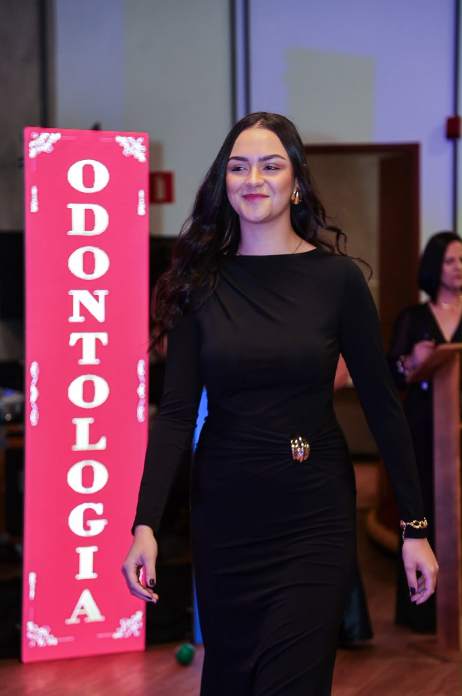

ODONTOLOGIA · FACULDADE SOBERANA
Maria Eduarda
Pacheco.
ESTUDANTE DEOdontologia
Faculdade Soberana
Descobertas que inspiram
novos caminhos.
Estudante de Odontologia da Faculdade Soberana. Por aqui, compartilho um pouco da minha trajetória, dos meus projetos e do que faz parte da minha vida.
Conheça minha trajetória01 / EM FORMAÇÃO. EM MOVIMENTO.

01 — SOBRE MIM
Uma trajetória
em construção.
Entre a faculdade, os projetos em grupo e a vida fora da sala de aula.
Sou Maria Eduarda Pacheco, estudante de Odontologia da Faculdade Soberana. A graduação faz parte do meu momento atual, assim como a participação no desenvolvimento do Oralis.
MINHA FORMAÇÃO
Odontologia
Faculdade Soberana
ALÉM DOS ESTUDOS
Equitação
O prazer de andar a cavalo.
02 — PROJETO EM DESENVOLVIMENTO
Ideias que abrem
novos caminhos.
Junto ao meu grupo, estou desenvolvendo o Oralis para submissão ao Hub de Inovação Soberana.
Conheça a página do projeto (abre em nova aba)Um projeto em grupo.
03 — VAMOS CONVERSAR?